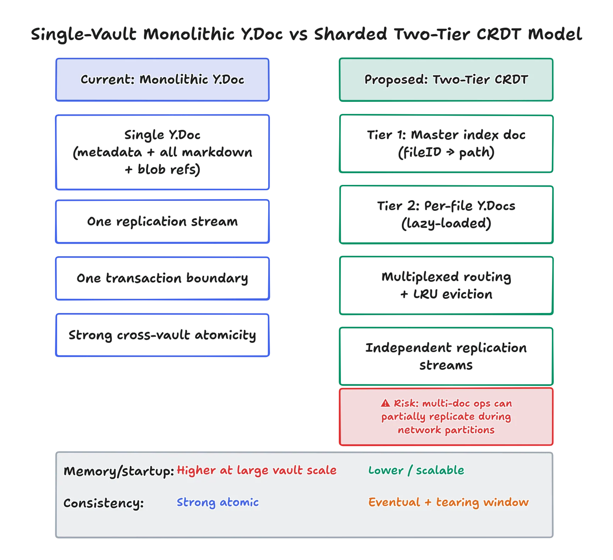
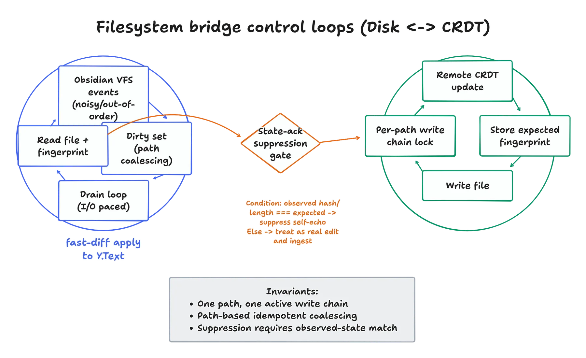
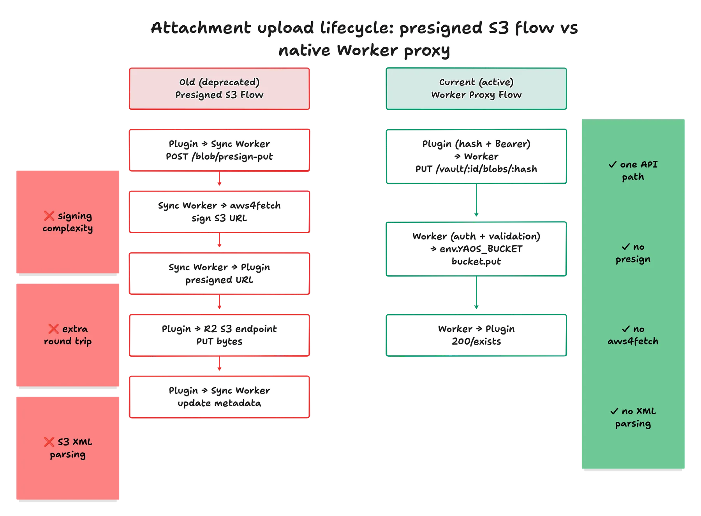
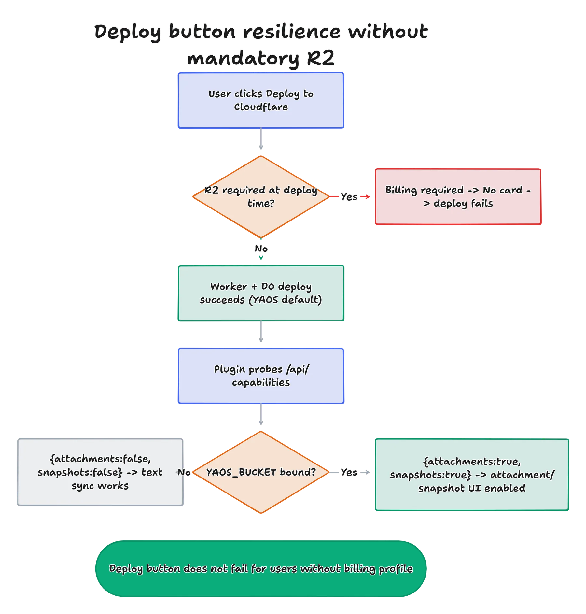
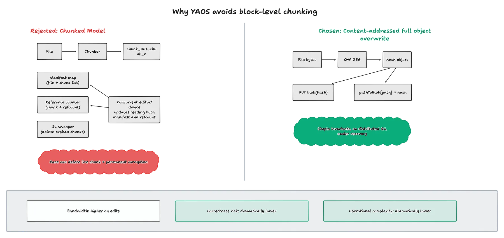

왜 만들었나
Obsidian으로 노트를 쌓다 보면 다른 기기에서도 읽고 싶어진다. 클라우드 폴더에 넣으면 편한데, 같은 노트를 두 군데서 고치면 '충돌 복사본'이 폴더에 쌓이고, 노트 전체가 남의 서버에 들어간다. 둘 다 내키지 않았다. 그래서 서버도 내가 배포하고 Yjs-충돌 없는 복제 데이터 타입(CRDT) 알고리즘-을 사용하여 합친다.
핵심 기능
- 같은 노트를 동시에 고쳐도 알아서 합쳐진다. 밀린 쪽의 기록은 버리지 않고 서버에 남긴다.
- 이름 바꾸기·이동도 안전하게 따라간다.
- 서버는 내 계정에 — 버튼 한 번으로 내 Cloudflare에 띄우고, 한 번 쓰고 끝나는 열쇠로 내 소유임을 등록한다.
주요 기술 성과
- 단일 Y.Doc 트리 아키텍처 — vault 전체를 단일 CRDT 문서로 묶어 파일 이름 변경·이동 연산 시 데이터 유실이나 정합성 깨짐 없이 원자적 트랜잭션 보장.
- 체크포인트 + 저널링 압축 엔진 — Cloudflare Durable Objects에서 편집을 저널 형태로 소형 저장하고, 일정 임계치 도달 시 스냅샷으로 결정론적 압축을 수행해 처리량 최적화.
- 운영 장애 극복 및 테스트 자동화 — 대용량 룸 크래시 장애를 원인 분석해 저널 상한선 정책을 수립하고, Obsidian 자동 조작 다기기 회귀 테스트 시나리오 구축.
설계 이야기
모든 문서에 고유한 번호를 붙이고 변경을 아주 잘게 쪼개서 저장한다. 그러면 두 기기가 어떤 순서로 고쳤는지 몰라도 끝에서 알아서 합쳐진다. 서버는 Cloudflare의 아주 작은 단위로 방마다 떠 있고, 저장은 '전체 사진'과 '변경 로그'를 겹쳐서 한다 — 작은 수정 한 번은 로그에만 붙으니 가볍다.





다이어그램 원본은 저장소의 engineering/diagrams에서 볼 수 있다.
어떻게 만들어 갔나
다른 사람의 프로젝트(YAOS)를 가져와 시작했지만, 마음에 안 드는 것부터 하나씩 적으며 갈라 나갔다. 고친 이유는 문서로 자세히 남겼다. 실제로 돌리다가 서버가 통째로 멈추는 장애를 만났고, 원인과 복구 과정을 부끄러운 그대로 문서에 적어뒀다. 문제가 생길 때마다 실제 Obsidian 앱을 움직이는 computer-use 스킬 테스트를 하나씩 추가했다.
만든 방식
'왜 그렇게 돌아가는지' 설명하지 못하면 못 믿는 성격이라, 설계 문서와 그림을 코드 옆에 계속 둔다. 구현에 AI 도구를 썼지만 저장이 잘못되어 날릴 수도 있는 결정은 직접 이해하고 정리한 뒤에야 반영했다. 원작 YAOS의 기여는 그대로 인정하고, 배포는 내 Cloudflare 계정에서 직접 하고 있다.
기술 스택
- TypeScript
- Yjs
- Cloudflare Workers
- Durable Objects
- Obsidian API